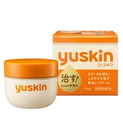

もう割れている・寝る前に塗る人

ユースキン
ボトル 120g（指定医薬部外品）
120g・ボトル
¥993税込・出典掲載価格
選び方と声
- 選ぶ条件：指先がもう割れていて、手を使わない寝る前にこってり塗りたい人
- 指定医薬部外品で、効能・効果は「ひび、あかぎれ、しもやけ」（メーカー公式）。スッとする香りは有効成分dl-カンフルの香り
- いろいろ試しても結局ここに戻る、夜に塗ると朝の指先がしっとりしている、という声
気になる声気になる点：こってりしていて塗ってしばらくはべたつくので、日中の仕事中より寝る前向き。傷があるとしみたという声も
販売価格・容量・送料はリンク先でご確認ください